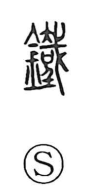

鉄

Kun: kurogane | On: tetsu
iron ・ hard ・ strong
Explanation
鉄 abbreviates 鐵, which combines 金, metal, with the phonetic 𢧑. The older sound element has an association with a dark colour. 驖, a reddish-black horse, belongs to the same family.
Iron is the dark metal, kurogane, beside other metals traditionally distinguished by colour. Its hardness and strength then provide an image for firmness, toughness, and an unyielding resolve. 鉄 can describe those qualities as well as the substance and implements made from it.
The modern right side is written 失. That shortened shape preserves the word after its older phonetic has been abbreviated. The sound relationship is clearest in the full 鐵 and its related dark-colour vocabulary.